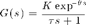
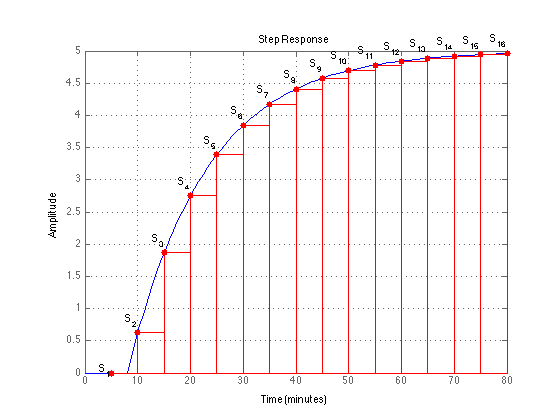

Example 20.1: Step Response for Model Preditive Control
File: Ch20_E01.m
The response to a unit step input characterizes a stable linear system for Model Predictive Control (MPC). This example shows how the step response is discretized and labeled.
Contents
clear all; addpath('utilities');
First Order plus time-delay model
Create a first-order transfer function of the form

K = 5; tau = 15; theta = 8; G = tf([K],[tau 1],'IOdelay',theta,'TimeUnit','minutes');
Step Response
The time grid is chosen long enough for the step response to approach a steady state. The sample time needs to be short enough to capture the transient behaviors.
dt = 5; tpred = 80; % Calculate Step Response t = (dt:dt:tpred)'; S = step(G,t); % Display Table k = (1:length(t))'; displaytable([k,t,S],'',{'k','t(k)','S(k)'});
k t(k) S(k)
1 5 0
2 10 0.62413
3 15 1.8646
4 20 2.7534
5 25 3.3902
6 30 3.8465
7 35 4.1735
8 40 4.4078
9 45 4.5757
10 50 4.6959
11 55 4.7821
12 60 4.8439
13 65 4.8881
14 70 4.9199
15 75 4.9426
16 80 4.9589
Step Response Plot
The Matlab stairs command plots the step response. This is combined with the continuous time step response to show the relationship between the continuous time response and the discretized step response.
figure(1);clf; step(G,max(t)); hold on; plot(t,S,'r.','Markersize',20); stairs(t,S,'r'); plot([t';t'],[zeros(1,length(t));S'],'r'); plot(t,zeros(length(t),1),'r'); for k = 1:length(t) text(t(k),S(k)+0.15*sign(S(k)),sprintf('S_{%d}',k),'HorizontalAlignment','Right'); end hold off; grid;